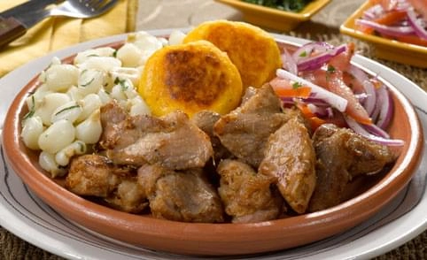
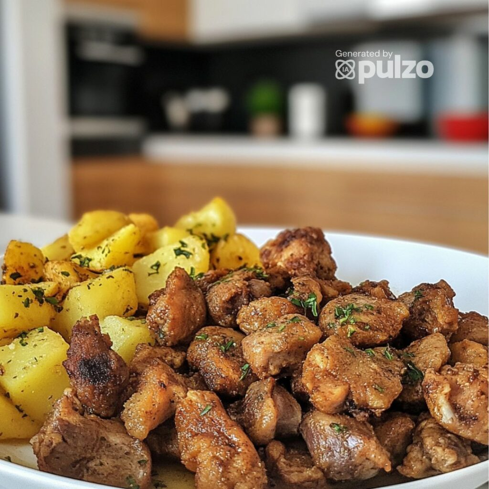
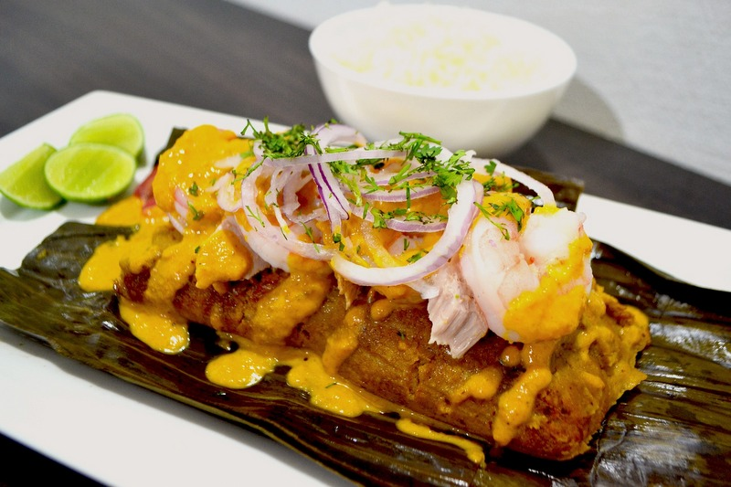
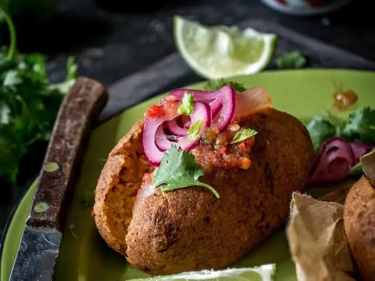
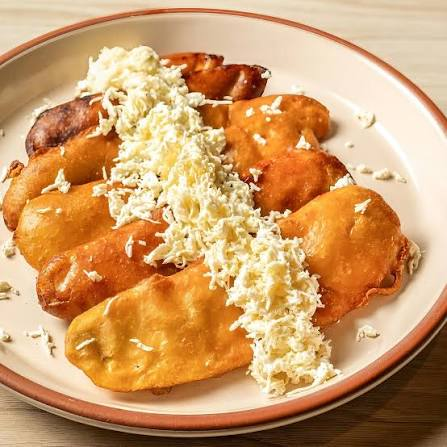

1. Breve descripción del cantón Montalvo
Montalvo es un cantón perteneciente a la provincia de Los Ríos, ubicado en la región Costa del Ecuador. Su cabecera cantonal lleva el mismo nombre.
Se caracteriza por sus paisajes naturales, su vegetación y sus actividades agrícolas. Sus tierras fértiles permiten la producción de arroz, cacao, banano, maíz y otros productos.
El cantón es conocido por sus atractivos naturales, especialmente sus ríos y balnearios, que reciben visitantes durante los fines de semana y feriados.
Sus habitantes conservan costumbres y tradiciones montubias que forman parte de la identidad cultural de la provincia de Los Ríos.
2. Parroquias del cantón Montalvo
El cantón Montalvo tiene como cabecera cantonal a la ciudad de Montalvo.
Parroquia urbana
- Montalvo.
Parroquias rurales
Montalvo no cuenta con parroquias rurales dentro de su división político-administrativa.
El territorio también comprende comunidades y recintos rurales que forman parte de su organización territorial.
3. Platos de comida típicos
Los platos típicos de Montalvo (cantón de la provincia de Los Ríos) reflejan la rica tradición costeña y montubia de la zona.
La Fritada

Es el plato emblema del cantón. Se sirve tradicionalmente con mote, maduro frito, salsa de tomate o encurtido, y en algunos lugares acompañada de arroz con menestra.
Mollejas de pollo con cuero de cerdo

Una popular y curiosa combinación local muy buscada por los viajeros, servida con tortillas de papa, choclo, maní, lechuga y mayonesa.
Bollos de pescado

Preparados a base de plátano verde y con pescado de la zona como el «boca chico».
Tortillas de maíz con café de pasar

Tradicionales para empezar el día.
Corviche

Es una preparación elaborada principalmente con plátano verde y pescado, que se cocina tradicionalmente al horno o frito.
Maduros lampreados

Una opción dulce y frita muy apetecida.
4. Lugares turísticos del cantón Montalvo
Río Cristal
Es uno de los atractivos naturales asociados al turismo de Montalvo. Sus aguas y paisajes naturales atraen a personas que buscan disfrutar de espacios recreativos.
Balnearios naturales
Montalvo es conocido por sus espacios recreativos relacionados con los ríos y las fuentes de agua. Estos lugares reciben visitantes que desean compartir con familiares y amigos, especialmente durante los fines de semana y feriados.
Centro de Montalvo
El centro de la ciudad permite conocer sus parques, espacios públicos, establecimientos comerciales y las actividades cotidianas de sus habitantes.
Entornos naturales y agrícolas
Los paisajes rurales del cantón permiten observar cultivos, vegetación y actividades relacionadas con la agricultura. Son importantes para conocer la riqueza natural y productiva de la zona.
Estos lugares son turísticos porque permiten disfrutar de la naturaleza, conocer las tradiciones locales y fomentar el desarrollo económico de las comunidades.
Para consultar ubicaciones puedes visitar:
Consultar lugares turísticos de Montalvo5. Hoteles donde alojarse en Montalvo
Las personas que visitan Montalvo pueden buscar establecimientos de alojamiento dentro del cantón y en ciudades cercanas de la provincia.
Para consultar las opciones de hospedaje disponibles, puedes utilizar el siguiente enlace:
Consultar hoteles en MontalvoSe recomienda verificar los precios, servicios, ubicación y disponibilidad antes de realizar una reservación.
6. Alcalde del cantón Montalvo
Eduardo Troncoso Rodríguez.

El alcalde es la máxima autoridad del Gobierno Autónomo Descentralizado Municipal de Montalvo.
Entre sus responsabilidades se encuentran administrar los recursos municipales, impulsar obras públicas, mejorar los servicios y promover el desarrollo del cantón.
7. Población del cantón Montalvo
El cantón Montalvo cuenta con una población distribuida entre la ciudad y sus diferentes comunidades rurales.
Para conocer la cantidad exacta de habitantes, se debe consultar el Censo de Población y Vivienda de 2022 del Instituto Nacional de Estadística y Censos del Ecuador.
Estos datos permiten conocer las características de la población y ayudan a planificar servicios públicos, educación, salud y obras para la comunidad.
8. Mapa del cantón Montalvo
En el siguiente mapa puedes observar la ubicación geográfica del cantón Montalvo, perteneciente a la provincia de Los Ríos, Ecuador.